Plot a 2-State or 3-State Projection of the Belief Space
Source:R/plot_belief_space.R
plot_belief_space.RdPlots the optimal action, the node in the policy graph or the reward for a given set of belief points on a line (2 states) or as a ternary plot (3 states). If no points are given, points are sampled using a regular arrangement or randomly from the (projected) belief space.
Usage
plot_belief_space(
model,
projection = NULL,
epoch = 1,
sample = "regular",
n = 100,
what = c("action", "pg_node", "reward"),
legend = TRUE,
pch = 20,
col = NULL,
jitter = 0,
oneD = TRUE,
...
)Arguments
- model
a solved POMDP.
- projection
Sample in a projected belief space. See
projection()for details.- epoch
display this epoch.
- sample
a matrix with belief points as rows or a character string specifying the
methodused forsample_belief_space().- n
number of points sampled.
- what
what to plot.
- legend
logical; add a legend? If the legend is covered by the plot then you need to increase the plotting region of the plotting device.
- pch
plotting symbols.
- col
plotting colors.
- jitter
jitter amount for 2-state belief spaces (good values are between 0 and 1, while using
ylim = c(0,1)).- oneD
plot projections on two states in one dimension.
- ...
additional arguments are passed on to
plotfor 2-state orTerneryPlotfor 3-state plots.
See also
Other policy:
estimate_belief_for_nodes(),
optimal_action(),
plot_policy_graph(),
policy(),
policy_graph(),
projection(),
reward(),
solve_POMDP(),
solve_SARSOP(),
value_function()
Other POMDP:
MDP2POMDP,
POMDP(),
accessors,
actions(),
add_policy(),
projection(),
reachable_and_absorbing,
regret(),
sample_belief_space(),
simulate_POMDP(),
solve_POMDP(),
solve_SARSOP(),
transition_graph(),
update_belief(),
value_function(),
write_POMDP()
Examples
# two-state POMDP
data("Tiger")
sol <- solve_POMDP(Tiger)
plot_belief_space(sol, pch = 15)
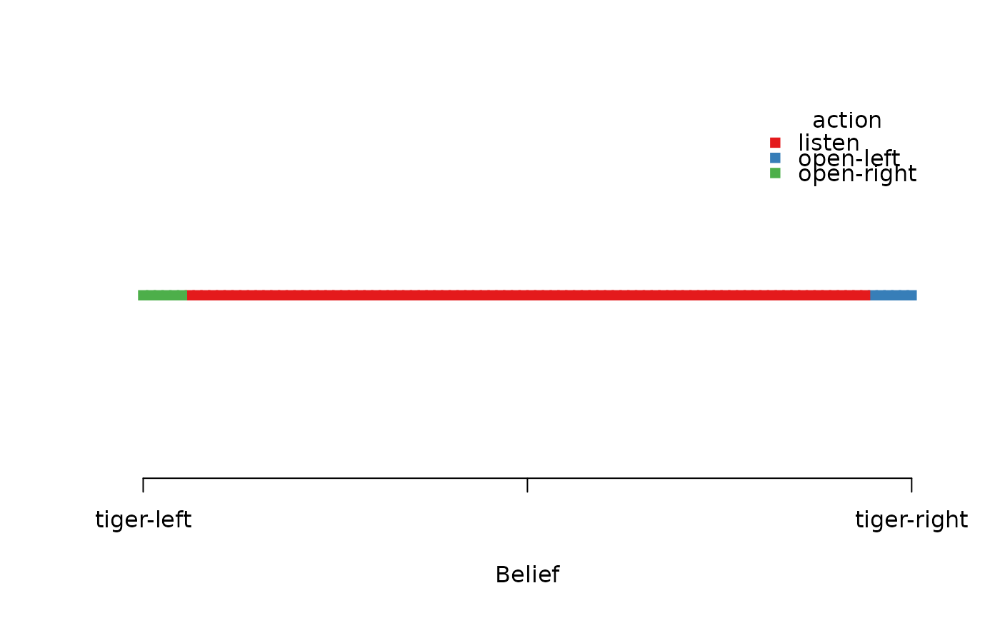
plot_belief_space(sol, oneD = FALSE)
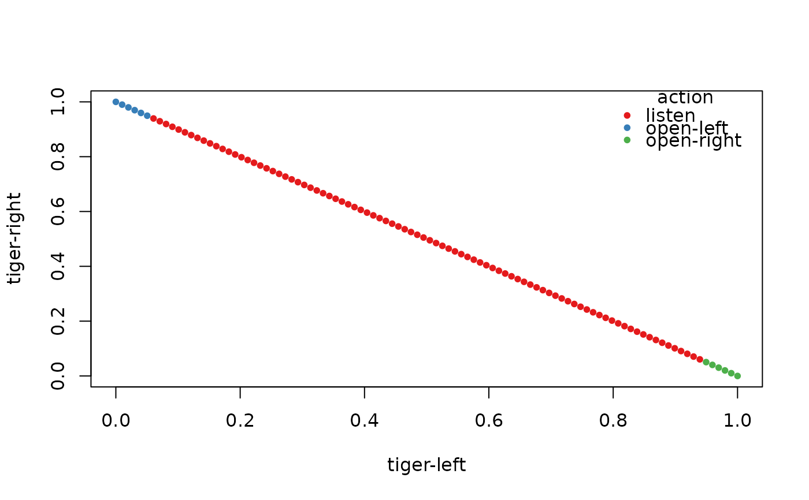
plot_belief_space(sol, n = 10)
 plot_belief_space(sol, n = 100, sample = "random")
plot_belief_space(sol, n = 100, sample = "random")
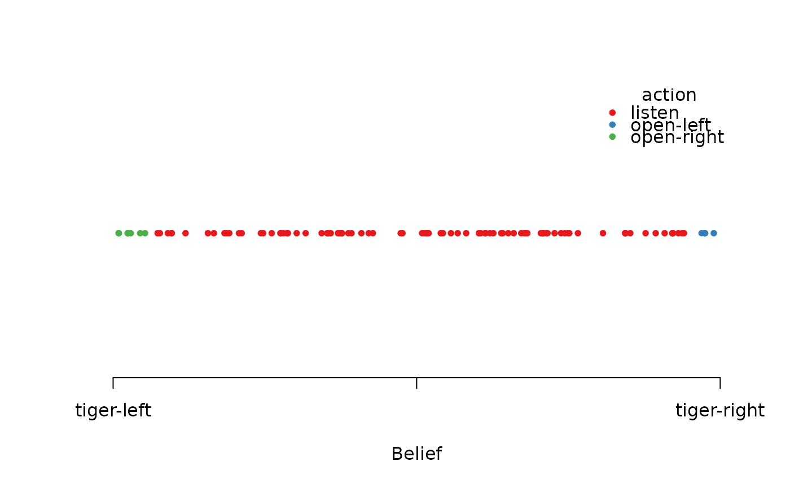
# plot the belief points used by the grid-based solver
plot_belief_space(sol, sample = sol$solution$belief_points_solver)
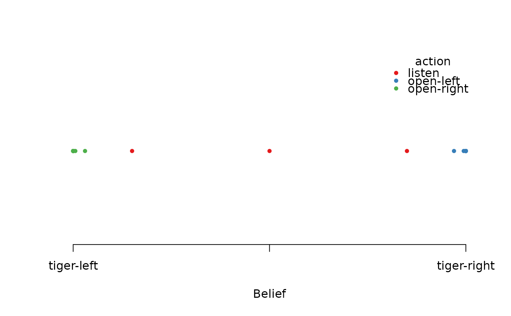
# plot different measures
plot_belief_space(sol, what = "pg_node", pch = 15)
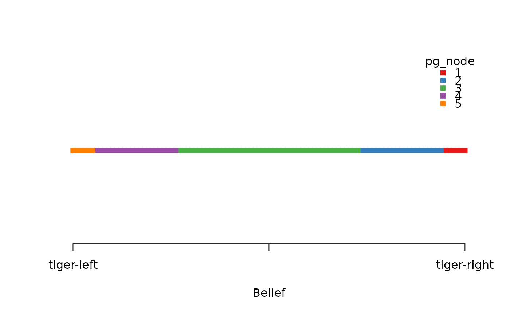
plot_belief_space(sol, what = "reward", pch = 15)
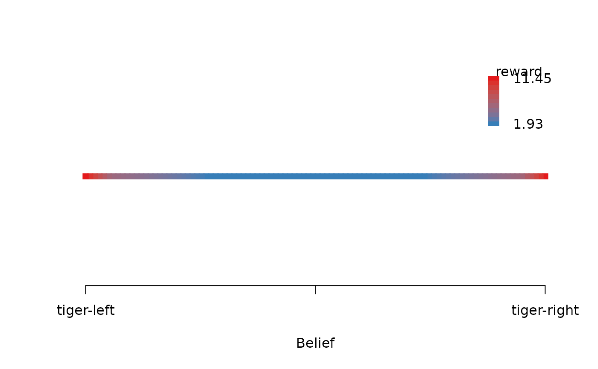
# three-state POMDP
# Note: If the plotting region is too small then the legend might run into the plot
data("Three_doors")
sol <- solve_POMDP(Three_doors)
sol
#> POMDP, list - 3-Door Tiger Problem
#> Discount factor: 0.75
#> Horizon: Inf epochs
#> Size: 3 states / 4 actions / 3 obs.
#> Start: uniform
#> Solved:
#> Method: ‘grid’
#> Solution converged: TRUE
#> # of alpha vectors: 5
#> Total expected reward: 5.068327
#>
#> List components: ‘name’, ‘discount’, ‘horizon’, ‘states’, ‘actions’,
#> ‘observations’, ‘transition_prob’, ‘observation_prob’, ‘reward’,
#> ‘start’, ‘info’, ‘solution’
# plotting needs the suggested package Ternary for 3-state plots
if ("Ternary" %in% installed.packages()) {
plot_belief_space(sol)
plot_belief_space(sol, n = 1024)
plot_belief_space(sol, what = "reward", sample = "random", n = 1000)
# holding tiger-left constant at .5 follows this line in the ternary plot
plot_belief_space(sol, n = 1024)
Ternary::TernaryLines(list(c(.5, 0, .5), c(.5, .5, 0)), col = "black", lty = 2)
# we can plot the projection for this line
plot_belief_space(sol, what = "action", n = 100, pch = 15,
projection = c("tiger-left" = .5))
# plot the belief points used by the grid-based solver
plot_belief_space(sol, sample = sol$solution$belief_points_solver, what = "pg_node")
# plot the belief points obtained using simulated trajectories with an epsilon-greedy policy.
# Note that we only use n = 50 to save time.
plot_belief_space(sol,
sample = simulate_POMDP(sol, n = 50, horizon = 100,
epsilon = 0.1, return_beliefs = TRUE)$belief_states)
}
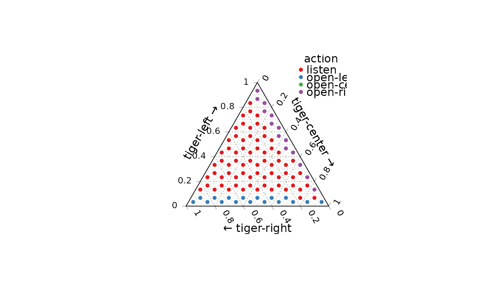
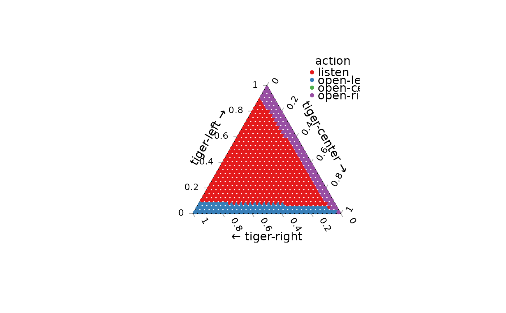
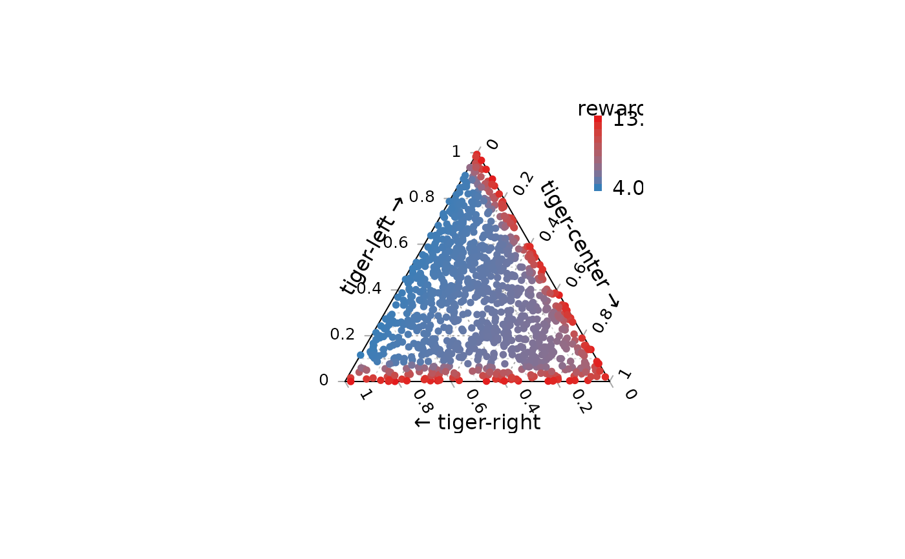
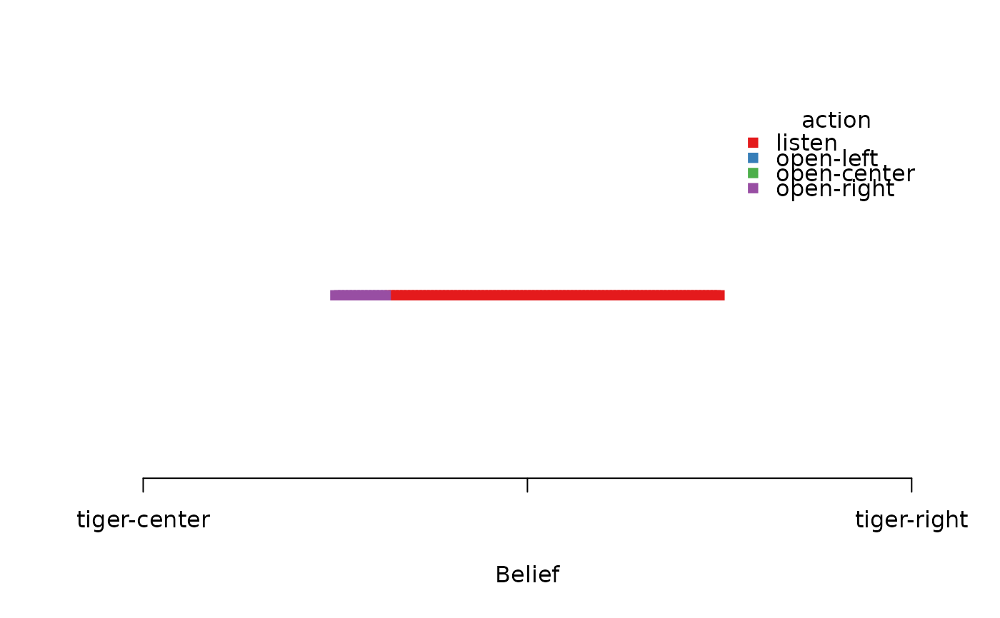
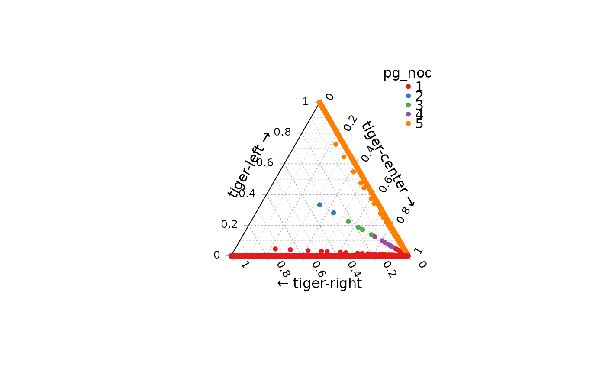
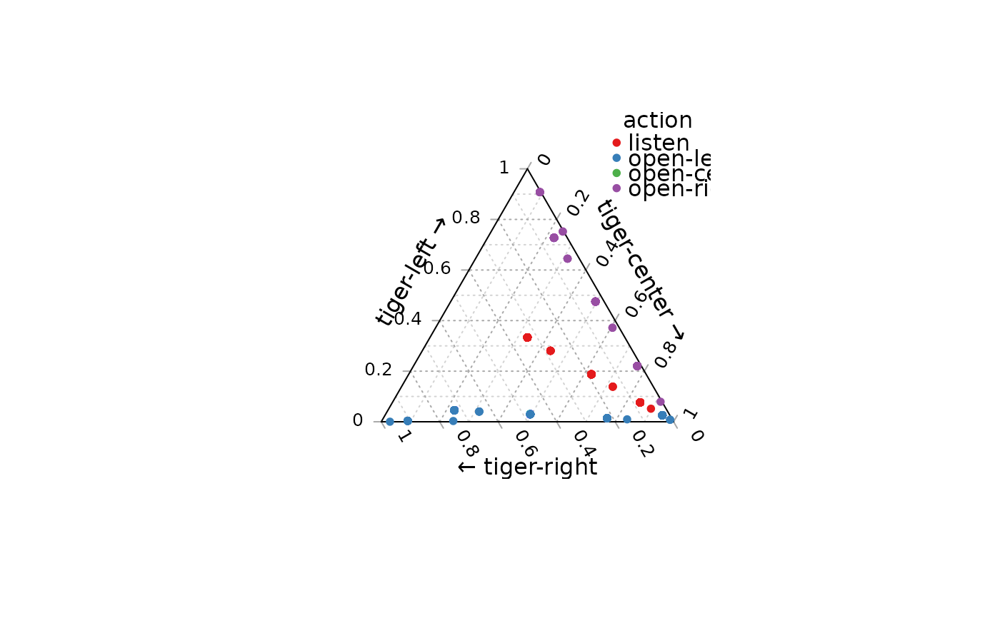
# plot a 3-state belief space using ggtern (ggplot2)
if (FALSE) { # \dontrun{
library(ggtern)
samp <- sample_belief_space(sol, n = 1000)
df <- cbind(as.data.frame(samp), reward_node_action(sol, belief = samp))
df$pg_node <- factor(df$pg_node)
ggtern(df, aes(x = `tiger-left`, y = `tiger-center`, z = `tiger-right`)) +
geom_point(aes(color = pg_node), size = 2)
ggtern(df, aes(x = `tiger-left`, y = `tiger-center`, z = `tiger-right`)) +
geom_point(aes(color = action), size = 2)
ggtern(df, aes(x = `tiger-left`, y = `tiger-center`, z = `tiger-right`)) +
geom_point(aes(color = reward), size = 2)
} # }